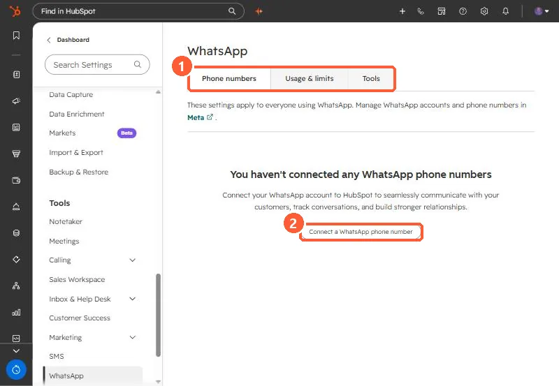

Short answer
You need a WhatsApp Business account; personal accounts cannot connect. HubSpot's KB says a verified Meta Business Manager is needed for more than 50 business-initiated conversations a day, each business account can have up to 25 numbers, and only new messages sync after connection. Once connected, messages stop appearing in the WhatsApp app unless you use coexistence. HubSpot supports up to 1,000 template messages a month across connected accounts.
1. The settings page
Settings > Tools > WhatsApp has Phone numbers, Usage & limits and Tools tabs, and points to Meta for account management.


2. Requirements and limits
- Business account only. Personal accounts must be converted first.
- Verified Meta Business Manager for more than 50 business-initiated conversations a day.
- Up to 25 phone numbers per business account.
- No history sync. Only new messages after connecting.
- Up to 1,000 template messages a month across all connected accounts.
3. Coexistence and consent
Coexistence lets the same number work in the WhatsApp Business App and HubSpot, and needs Super Admin plus Meta Business admin rights. Sending templates from workflows needs verifiable opt-in consent from the contact.